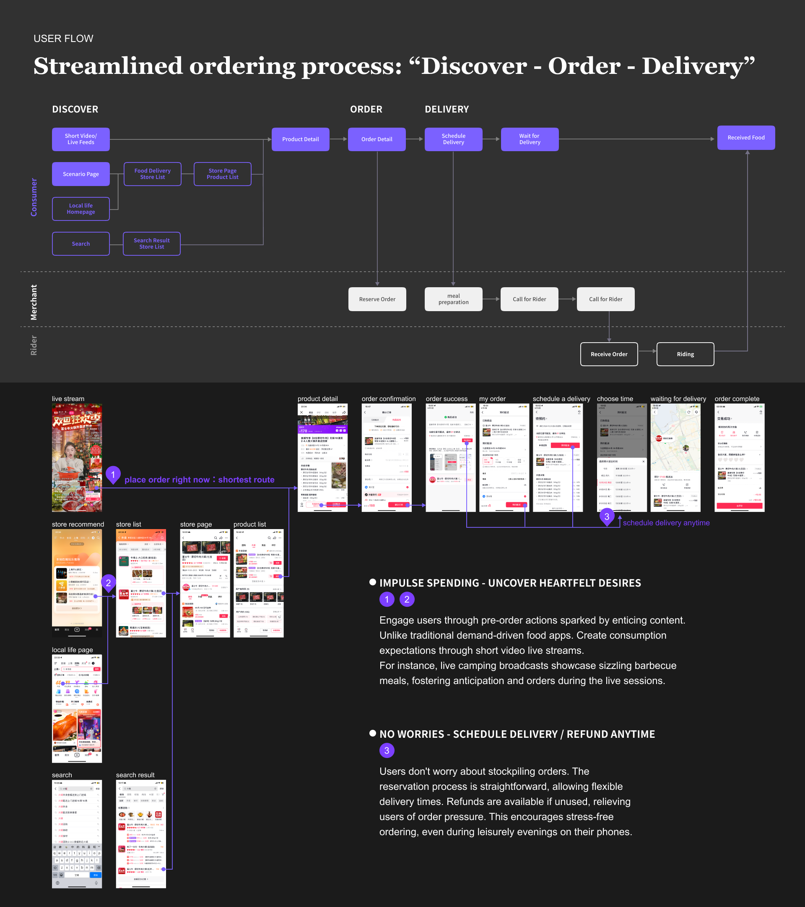

Content-Driven Food Delivery Experience
TikTok’s Local Life team aimed to reinvent how people discover and order food — not through static restaurant lists, but through emotion-driven content. Users could watch short videos or join live streams from merchants, feel inspired, and place an order directly within the content interface.
I led the product design for the new “Order First, Then Schedule Delivery” experience — an innovative mechanism that bridges content engagement and food delivery conversion.

Suggested Visuals
- Flow diagram: “User watches Live → Collects Voucher → Redeems Later → Delivery”
- Screenshot mock of live-stream with “Order Now” or “Collect Voucher” overlay
Traditional delivery apps rely on intent-based behavior (search → compare → order). However, TikTok’s content ecosystem operates on impulse and inspiration — users are emotionally triggered but rarely hungry right now.
The challenge was:
How can we capture users’ desire in the content moment, and convert it into real consumption later?

Suggested Visuals
- Comparison chart: “Intent-driven vs Emotion-driven funnel”
1️⃣ Mapping the Cross-Domain Flow
Worked with commerce, live-stream, and delivery teams to align three systems:
- Live content vouchers
- User voucher wallet
- Delivery ordering flow

2️⃣ Designing the ‘Order Later’ System
We created a feature allowing users to collect and store discounted meal vouchers during a live session, and later redeem them when placing food orders. This turned “ephemeral emotion” into “stored intent,” extending the lifecycle of engagement.
3️⃣ A/B Testing Conversion Triggers
Tested different redemption reminders (push, in-feed cards) to optimize timing for conversion. Result: increased live-to-order retention and overall GMV uplift (confidential, but significant).

- Improved post-live order conversion and repeat user rate
- Established a reusable framework for other verticals (beauty, retail)
- Demonstrated TikTok’s potential to link “content → intent → transaction”
This project taught me how to merge UX empathy with business mechanism thinking — understanding not only what users feel but how to capture that moment sustainably.